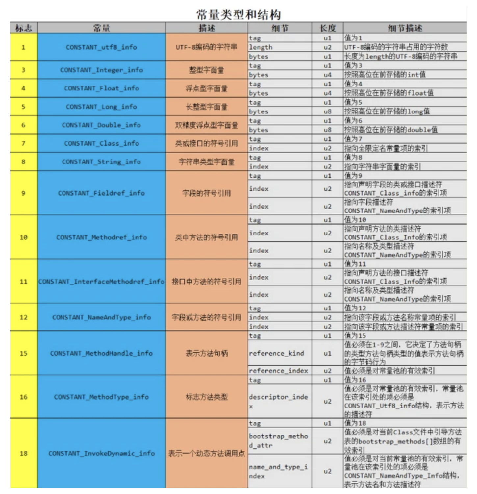
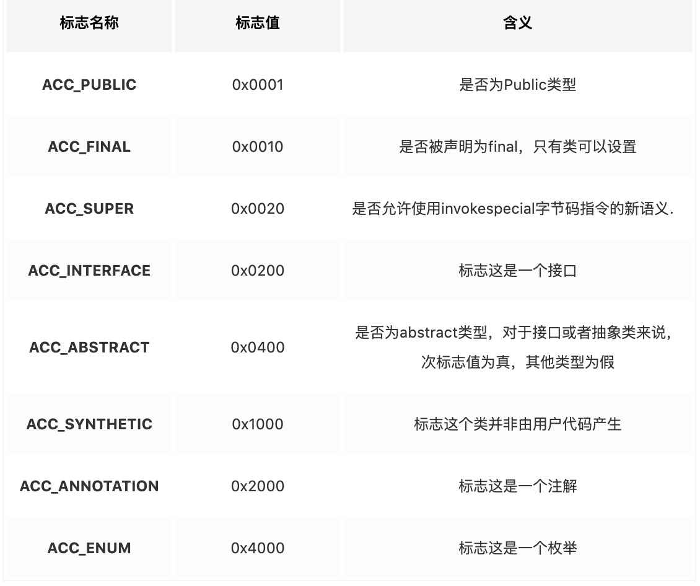

前
Java字节码结构看过很多遍，单总是记不太清，看的博客也是五花八门，这里还是自己总结下。
声明：本篇博客大部分位其他博客内容，只供自己总结使用，不是原创内容
结构
字节码
Java字节码是Java跨平台，也就是所谓“一次编译，到处运行“的根本，Java的运行容器，也就是JVM，它不是跨平台的，win和linux的JVM实现都不一样，真正跨平台的是字节码文件，因为所有字节码是同一份，不同平台的JVM虽然实现不同，但是大家都遵循着一个规范，就是JVM规范，对于字节码的识别是相同的。
而字节码文件（.class）并不是Java独有的，也可以理解为它适合JVM绑定的，因为不只是Java代码可以编译成字节码文件，例如scala，groovy，kotlin文件都可以编译成字节码文件，这也是这些代码可以在一个项目里存在的原因，使用不同的编译器，不同的代码文件最后都编译成同一份字节码文件。
获取字节码
Java中获取字节码很简单，使用javac xxx.java 即可
打开字节码文件一般以16进制的形式打开（vscode用hexdunp插件）
一般用idea打开的字节码文件都是反编译以后的Java代码，也可以用javap反编译，结果更清晰一点
这边复制一份网上的字节码文件
java代码是 Main.java
public class Main {
private int m;
public int inc() {
return m + 1;
}
}字节码 Main.class
Offset: 00 01 02 03 04 05 06 07 08 09 0A 0B 0C 0D 0E 0F
00000000: CA FE BA BE 00 00 00 34 00 13 0A 00 04 00 0F 09 J~:>...4........
00000010: 00 03 00 10 07 00 11 07 00 12 01 00 01 6D 01 00 .............m..
00000020: 01 49 01 00 06 3C 69 6E 69 74 3E 01 00 03 28 29 .I...<init>...()
00000030: 56 01 00 04 43 6F 64 65 01 00 0F 4C 69 6E 65 4E V...Code...LineN
00000040: 75 6D 62 65 72 54 61 62 6C 65 01 00 03 69 6E 63 umberTable...inc
00000050: 01 00 03 28 29 49 01 00 0A 53 6F 75 72 63 65 46 ...()I...SourceF
00000060: 69 6C 65 01 00 09 4D 61 69 6E 2E 6A 61 76 61 0C ile...Main.java.
00000070: 00 07 00 08 0C 00 05 00 06 01 00 0A 6F 74 68 65 ............othe
00000080: 72 2F 4D 61 69 6E 01 00 10 6A 61 76 61 2F 6C 61 r/Main...java/la
00000090: 6E 67 2F 4F 62 6A 65 63 74 00 21 00 03 00 04 00 ng/Object.!.....
000000a0: 00 00 01 00 02 00 05 00 06 00 00 00 02 00 01 00 ................
000000b0: 07 00 08 00 01 00 09 00 00 00 1D 00 01 00 01 00 ................
000000c0: 00 00 05 2A B7 00 01 B1 00 00 00 01 00 0A 00 00 ...*7..1........
000000d0: 00 06 00 01 00 00 00 08 00 01 00 0B 00 0C 00 01 ................
000000e0: 00 09 00 00 00 1F 00 02 00 01 00 00 00 07 2A B4 ..............*4
000000f0: 00 02 04 60 AC 00 00 00 01 00 0A 00 00 00 06 00 ...`,...........
00000100: 01 00 00 00 0D 00 01 00 0D 00 00 00 02 00 0E ...............javap反编译 javap -verbose -p Main.class
Classfile /Users/xxx/xxx/xxxx/xxx/main/java/xxx/Main.class
Last modified 2022-2-25; size 271 bytes
MD5 checksum 81e29186872af47b63bf14bd01d386b8
Compiled from "Main.java"
public class other.Main
minor version: 0
major version: 52
flags: ACC_PUBLIC, ACC_SUPER
Constant pool:
#1 = Methodref #4.#15 // java/lang/Object."<init>":()V
#2 = Fieldref #3.#16 // other/Main.m:I
#3 = Class #17 // other/Main
#4 = Class #18 // java/lang/Object
#5 = Utf8 m
#6 = Utf8 I
#7 = Utf8 <init>
#8 = Utf8 ()V
#9 = Utf8 Code
#10 = Utf8 LineNumberTable
#11 = Utf8 inc
#12 = Utf8 ()I
#13 = Utf8 SourceFile
#14 = Utf8 Main.java
#15 = NameAndType #7:#8 // "<init>":()V
#16 = NameAndType #5:#6 // m:I
#17 = Utf8 other/Main
#18 = Utf8 java/lang/Object
{
private int m;
descriptor: I
flags: ACC_PRIVATE
public other.Main();
descriptor: ()V
flags: ACC_PUBLIC
Code:
stack=1, locals=1, args_size=1
0: aload_0
1: invokespecial #1 // Method java/lang/Object."<init>":()V
4: return
LineNumberTable:
line 8: 0
public int inc();
descriptor: ()I
flags: ACC_PUBLIC
Code:
stack=2, locals=1, args_size=1
0: aload_0
1: getfield #2 // Field m:I
4: iconst_1
5: iadd
6: ireturn
LineNumberTable:
line 13: 0
}
SourceFile: "Main.java"详细结构
魔数
前8位是魔数，字节码的标志，都是CAFEBABE
版本号
接下来8位位版本号0000 0034，前4位位副版本号，后四位位主版本号，（只知道java8是52，是有规律的）
常量池
接下来4位0013是常量池中的常量数量，这个数量是从1开始计数的，所以一共有18个，
常量池中存放了（字面量）文字字符串，常量值，（符号引用）当前类的类名，字段名，方法名，字段和方法的描述符，对当前类的引用信息，当前类中对其他类的引用信息等。
常量池是一个类的结构索引，其他地方对对象的引用可以通过索引位置代替，常量池中的数据通过索引来访问，但是下标是从1开始的，如果索引了0，就代表不引用任何常量。
在字节码加载入虚拟机的链接阶段，内部分为校验，准备，解析，在解析阶段，会把符号引用转变为直接引用，也就是把常量池中的这些符号引用转化成为内存中的真实地址。
0013后面的到下一个类型前的内容都是常量池的内容，每一种常量类型的结构不同，占用字节也不同，解析也是通过tag先识别类型，然后读取对应长度的字节来解析的。
这边就不具体说了，可以参考一下表

类访问标记
接下来是类的访问标记，有个对应表

值得注意的是，这个字段用两个字节表示，例如例子中的javap后的反编译内容中访问标记是ACC_PUBLIC, ACC_SUPER，将二者相加，结果是0x0021，可以在字节码文件中找到
类索引，父类索引，接口索引
接下来的2个字节是类的索引，是一个无符号整数，值为常量池的索引，
再接下来2个字节是父类的索引，同上
再接下来2个字节是接口的计数
再接下来n*2个字节是接口的索引，n是接口的数量
字段表
接下来2个字节表示类的字段数量，包括实例字段和类字段，不包括方法内部的局部变量，同样不包括父类或者接口中的字段
再接下来就是字段的具体描述，每个字段用一个field_info结构体来描述，包含多个修饰符，例如：
- 访问标记 u2
- 字段名索引 u2
- 描述符索引 u2
- 属性计数器 u2
- 属性集合
其中修饰符都是布尔值，要么有，要么没有，字段名是索引，常量池中的
还有一个属性集合包含初始化值，注释信息等
方法表
还是先是两个字节表示方法数量
接下来是方法的具体描述，使用method_info来描述，结构也类似
- 访问标志 u2
- 字段名索引 u2
- 描述符索引 u2
- 属性计数器 u2
- 属性集合
属性表集合
属性表指class文件携带的辅助信息，比如该class文件的源文件的名称，以及注解信息
属性表的结构没有很严格，只要不重名，任何人实现的编译器都可以向属性表写入东西，但是java虚拟机会忽略掉不认识的
结构如下
- 属性名索引 u2
- 属性长度 u4
- 属性表 u1
属性表详情就不介绍了，后面有需要再说。